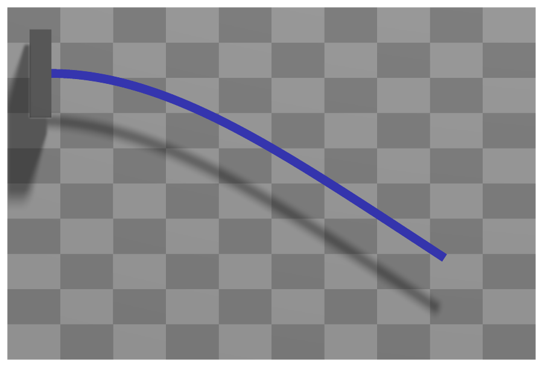

ObjectANCFCable2D
A 2D cable finite element using 2 nodes of type NodePoint2DSlope1. The localPosition of the beam with length \(L\)=length and height \(h\) ranges in \(X\)-direction in range \([0, L]\) and in \(Y\)-direction in range \([-h/2,h/2]\) (which is in fact not needed in the EOM).


Interface
Python names:
ObjectANCFCable2DorCable2D, andVCable2Dfor its visualizationNodes it takes: NodePoint2DSlope1
Body markers that can be placed on it: MarkerBodyMass, MarkerBodyPosition, MarkerBodyRigid
Parameters
The parameters of the item; in a dictionary, its type is ‘ANCFCable2D’:
name |
type |
size |
default |
description |
|---|---|---|---|---|
name |
String |
‘’ |
objects’s unique name |
|
length |
UReal |
0. |
(symbol: \(L\)) [SI:m] reference length of beam; such that the total volume (e.g. for volume load) gives \(\rho A L\); must be positive |
|
massPerLength |
UReal |
0. |
(symbol: \(\rho A\)) [SI:kg/m] mass per length of beam |
|
bendingStiffness |
UReal |
0. |
(symbol: \(EI\)) [SI:Nm\(^2\)] bending stiffness of beam; the bending moment is \(m = EI (\kappa - \kappa_0)\), in which \(\kappa\) is the material measure of curvature |
|
axialStiffness |
UReal |
0. |
(symbol: \(EA\)) [SI:N] axial stiffness of beam; the axial force is \(f_{ax} = EA (\varepsilon -\varepsilon_0)\), in which \(\varepsilon = \vert \rv^\prime\vert -1\) is the axial strain |
|
bendingDamping |
UReal |
0. |
(symbol: \(d_{K}\)) [SI:Nm\(^2\)/s] bending damping of beam ; the additional virtual work due to damping is \(\delta W_{\dot \kappa} = \int_0^L \dot \kappa \delta \kappa dx\) |
|
axialDamping |
UReal |
0. |
(symbol: \(d_{\varepsilon}\)) [SI:N/s] axial damping of beam; the additional virtual work due to damping is \(\delta W_{\dot\varepsilon} = \int_0^L \dot \varepsilon \delta \varepsilon dx\) |
|
referenceAxialStrain |
Real |
0. |
(symbol: \(\varepsilon_0\)) [SI:1] reference axial strain of beam (pre-deformation) of beam; without external loading the beam will statically keep the reference axial strain value |
|
referenceCurvature |
Real |
0. |
(symbol: \(\kappa_0\)) [SI:1/m] reference curvature of beam (pre-deformation) of beam; without external loading the beam will statically keep the reference curvature value |
|
strainIsRelativeToReference |
Real |
0. |
(symbol: \(f\cRef\)) if set to 1., a pre-deformed reference configuration is considered as the stressless state; if set to 0., the straight configuration plus the values of \(\varepsilon_0\) and \(\kappa_0\) serve as a reference geometry; allows also values between 0. and 1. |
|
nodeNumbers |
NodeIndex2 |
2 |
[invalid (-1), invalid (-1)] |
two node numbers ANCF cable element |
useReducedOrderIntegration |
Index |
0 |
0/false: use Gauss order 9 integration for virtual work of axial forces, order 5 for virtual work of bending moments; 1/True: use Gauss order 7 integration for virtual work of axial forces, order 3 for virtual work of bending moments; 2: use mixed Lobatto/Gauss integration with exceptional quality of axial strain, however, spurious (hourglass) modes may occur! |
|
axialForceUserFunction |
ObjectANCFCable2DAxialForceUserFunction |
0 |
(symbol: \(\mathrm{UF} \in \Rcal\)) A Python function which defines the (nonlinear relations) of local strains (including axial strain and bending strain) as well as time derivatives to the local axial force; see description below |
|
bendingMomentUserFunction |
ObjectANCFCable2DBendingMomentUserFunction |
0 |
(symbol: \(\mathrm{UF} \in \Rcal\)) A Python function which defines the (nonlinear relations) of local strains (including axial strain and bending strain) as well as time derivatives to the local bending moment; see description below |
|
visualization |
VObjectANCFCable2D |
parameters for visualization of item |
Renamed parameters, still taken with a DeprecationWarning: physicsLength (deprecated since 1.12.258, removed in 2031): use length; physicsMassPerLength (deprecated since 1.12.258, removed in 2031): use massPerLength; physicsBendingStiffness (deprecated since 1.12.258, removed in 2031): use bendingStiffness; physicsAxialStiffness (deprecated since 1.12.258, removed in 2031): use axialStiffness; physicsBendingDamping (deprecated since 1.12.258, removed in 2031): use bendingDamping; physicsAxialDamping (deprecated since 1.12.258, removed in 2031): use axialDamping; physicsReferenceAxialStrain (deprecated since 1.12.258, removed in 2031): use referenceAxialStrain; physicsReferenceCurvature (deprecated since 1.12.258, removed in 2031): use referenceCurvature.
Visualization parameters
The parameters of VObjectANCFCable2D, given as visualization:
name |
type |
size |
default |
description |
|---|---|---|---|---|
show |
Bool |
True |
set true, if item is shown in visualization and false if it is not shown |
|
drawHeight |
float |
0. |
if beam is drawn with rectangular shape, this is the drawing height |
|
color |
Float4 |
4 |
[-1.,-1.,-1.,-1.] |
RGBA color of the object; if R==-1, use default color |
Drawing
Drawn as all finite elements; a band of height drawHeight along the axis, of bodies.beams.axialTiling segments, or a line if drawHeight is 0; the bodies.beams.drawVertical... settings draw a value (e.g. a force) across it.
Settings beyond those of all finite elements: bodies.beams.axialTiling, bodies.beams.crossSectionFilled, bodies.beams.crossSectionTiling, bodies.beams.drawVertical, bodies.beams.drawVerticalColor, bodies.beams.drawVerticalFactor, bodies.beams.drawVerticalLines, bodies.beams.drawVerticalOffset, bodies.beams.drawVerticalValues, bodies.beams.reducedAxialInterploation, general.rendererPrecision.
Output variables
Available as OutputVariableType in sensors, Get...Output() and other functions:
output variable |
symbol |
description |
|---|---|---|
Position |
\(\LU{0}{\pv\cConfig(x,y,0)} = \rv\cConfig(x) + y\cdot \nv\cConfig(x)\) |
global position vector of local position \([x,y,0]\) |
Displacement |
\(\LU{0}{\uv\cConfig(x,y,0)} = \LU{0}{\pv\cConfig(x,y,0)} - \LU{0}{\pv\cRef(x,y,0)}\) |
global displacement vector of local position |
Velocity |
\(\LU{0}{\vv(x,y,0)} = \LU{0}{\dot \rv(x)} - y \cdot \omega_2 \cdot\LU{0}{\tv(x)} \) |
global velocity vector of local position |
VelocityLocal |
\(\LU{b}{\vv(x,y,0)} = \LU{b0}{\Rot}\LU{0}{\vv(x,y,0)}\) |
local velocity vector of local position |
Rotation |
\(\varphi = \mathrm{atan2}(r'_y, r'_x)\) |
(scalar) rotation angle of axial slope vector (relative to global \(x\)-axis) |
Director1 |
\(\rv'(x)\) |
(axial) slope vector of local axis position (at \(y\)=0) |
StrainLocal |
\(\varepsilon\) |
axial strain (scalar) of local axis position (at Y=0) |
CurvatureLocal |
\(K\) |
axial strain (scalar) |
ForceLocal |
\(N\) |
(local) section normal force (scalar, including reference strains) (at \(y\)=0); note that strains are highly inaccurate when coupled to bending, thus consider useReducedOrderIntegration=2 and evaluate axial strain at nodes or at midpoint |
TorqueLocal |
\(M\) |
(local) bending moment (scalar) (at \(y\)=0) |
AngularVelocity |
\(\tomega = [0,\, ,0,\, \omega_2]\) |
angular velocity of local axis position (at \(y\)=0) |
AngularVelocityLocal |
\([0,\,0,\,\omega_z]\tp\) |
the angular velocity of the axis, the same as AngularVelocity in the plane |
Acceleration |
\(\LU{0}{\av(x,y,0)} = \LU{0}{\ddot \rv(x)} - y \cdot \dot\omega_2 \cdot\LU{0}{\tv(x)}- y \cdot \omega_2 \cdot\LU{0}{\dot\tv(x)} \) |
global acceleration vector of local position |
AngularAcceleration |
\(\talpha = [0,\, ,0,\, \dot\omega_2]\) |
angular acceleration of local axis position |
KineticEnergy |
\(T = \frac{1}{2} \dot\qv\tp \Mm\, \dot\qv\) |
kinetic energy from the mass matrix of the current state and the velocities of the nodes; current configuration only; localPosition must be \([0,0,0]\) |
PotentialEnergy |
\(V = \frac{1}{2}\int_0^L EA\,(\varepsilon - \varepsilon_\mathrm{ref})^2 + EI\,(\kappa - \kappa_\mathrm{ref})^2\, dx\) |
elastic energy, integrated with the rules of the elastic forces (useReducedOrderIntegration); raises for a user function; localPosition must be \([0,0,0]\) |
Detailed description
Definition of quantities
intermediate variables |
symbol |
description |
|---|---|---|
beam height |
\(h\) |
beam height used in several definitions, but effectively undefined. The geometry of the cross section has no influence except for drawing or contact. |
local beam position |
\(\pLocB=[x,\, y,\, 0]\tp\) |
local position at axial coordinate \(x \in [0,L]\) and cross section coordinate \(y \in [-h/2, h/2]\). |
beam axis position |
\(\LU{0}{\rv(x)} = \rv(x) \) |
|
beam axis slope |
\(\LU{0}{\rv'(x)} = \rv'(x) \) |
|
beam axis tangent |
\(\LU{0}{\tv(x)} = \frac{\rv'(x)}{\Vert \rv(x)'\Vert} \) |
this (normalized) vector is normal to cross section |
beam axis normal |
\(\LU{0}{\nv(x)} = [n_x,\, n_y]\tp = [-t_y,\, t_x]\tp \) |
this (normalized) vector lies within the cross section and defines positive \(y\)-direction. |
angular velocity |
\(\omega_2 = (-r'_y \cdot \dot r'_x + r'_x \cdot \dot r'_y) / \Vert \rv(x)'\Vert^2 \) |
|
rotation matrix |
\(\LU{0b}{\Rot}\) |
The Bernoulli-Euler beam is capable of large axial and bendig deformation as it employs the material measure of curvature for the bending.
Kinematics and interpolation
Note that in this section, expressions are written in 2D, while output variables are in general 3D quantities, adding a zero for the \(z\)-coordinate.
ANCF elements follow the original concept proposed by Shabana shabana1997ancf. The present 2D element is based on the interpolation used by Berzeri and Shabana berzeri2000, but the formulation (especially of the elastic forces) is according to Gerstmayr and Irschik GerstmayrIrschik2008. Slight improvements for the integration of elastic forces and additional terms for off-axis forces and constraints are mentioned here.
The current position of an arbitrary element at local axial position \(x \in [0,L]\), where \(L\) is the beam length, reads
The derivative of the position w.r.t. the axial reference coordinate is denoted as slope vector,
The interpolation is based on cubic (spline) interpolation of position, displacements and velocities. The generalized coordinates \(\qv \in \Rcal^8\) of the beam element is defined by
in which \(\rv_0\) is the position of node 0 and \(\rv_1\) is the position of node 1, \(\rv'_0\) the slope at node 0 and \(\rv'_1\) the slope at node 1. Note that ANCF coordinates in the present notation are computed as sum of reference and current coordinates
which is used throughout here. For time derivatives, it follows that \(\dot \qv = \dot \qv\cCur\).
Position and slope are interpolated with shape functions. The position and slope along the beam are interpolated by means of
in which \(\Sm\) is the shape function matrix,
with identity matrix \(\ImTwo \in \Rcal^{2 \times 2}\) and the shape functions
Velocity simply follows as
Strains and limitations
Axial strain and bending (the material measure of curvature) of a Bernoulli-Euler beam: no shear deformation and no deformation of the cross section, which has no geometry of its own except for drawing and contact.
Mass matrix
The mass matrix is constant and therefore precomputed at the first time it is needed (e.g., during computation of initial accelerations). The analytical form of the mass matrix reads
which is approximated using
with integration weights \(w(x_{ip})\), \(\sum w(x_{ip})=2\), and integration points \(x_{ip}\), given as,
Here, we use the Gauss integration rule with order 7, having \(n_{ip}=4\) Gauss points, see Integration points. Due to the third order polynomials, the integration is exact up to round-off errors.
Elastic forces
The elastic forces \(\Qm_e\) are implicitly defined by the relation to the virtual work of elastic forces, \(\delta W_e\), of applied forces, \(\delta W_a\) and of viscous forces, \(\delta W_v\),
The virtual work of elastic forces reads GerstmayrIrschik2008,
in which the axial strain is defined as GerstmayrIrschik2008
and the material measure of curvature (bending strain) is given as
in which \(\ev_3\) is the unit vector which is perpendicular to the plane of the planar beam element.
By derivation, we obtain the variation of axial strain
and the variation of \(K\)
The normal force (axial force) \(N\) in the beam is defined as function of the current strain \(\varepsilon\),
in which \(\varepsilon_0\) includes the (pre-)stretch of the beam, e.g., due to temperature or plastic deformation and \(\varepsilon\cRef\) includes the strain of the reference configuration. As can be seen, the reference strain is only considered, if \(f\cRef=1\), which allows to consider the reference configuration to be completely stress-free (but the default value is \(f\cRef=0\) !). Note that – due to the inherent nonlinearity of \(\varepsilon\) – a combination of \(\varepsilon_0\) and \(f\cRef=1\) is physically only meaningful for small strains. A factor \(f\cRef<1\) allows to realize a smooth transition between deformed and straight reference configuration, e.g. for initial configurations.
The bending moment \(M\) in the beam is defined as function of the current material measure of curvature \(K\),
in which \(K_0\) includes the (pre-)curvature of the undeformed beam and \(K\cRef\) includes the curvature of the reference configuration, multiplied with the factor \(f\cRef=1\), see the axial strain above.
Using the latter definitions, the elastic forces follow from (67).
The virtual work of viscous damping forces, assuming viscous effects proportial to axial streching and bending, is defined as
with material coefficients \(d_\varepsilon\) and \(d_K\). The time derivatives of axial strain \(\dot \varepsilon_p\) follows by elementary differentiation
as well as the derivative of the curvature,
The virtual work of applied forces reads
in which \(\fv_i\) are forces applied to a certain position \(x_f\) at the beam centerline. The second term contains a load per length \(\bv\), which is case of gravity vector \(\gv\) reads
Note that the variation of \(\rv\) simply follows as
Numerical integration of Elastic Forces
The numerical integration of elastic forces \(\Qm_e\) is split into terms due to \(\delta \varepsilon\) and \(\delta K\),
using different integration rules
with the integration points \(x_{ip}\) as defined in (66) and integration rules from Integration points.
There are 3 different options for integration rules depending on the flag useReducedOrderIntegration:
useReducedOrderIntegration= 0: \(n_{ip}^\varepsilon = 5\) (Gauss order 9), \(n_{ip}^K = 3\) (Gauss order 5) – this is considered as full integration, leading to very small approximations; certainly, due to the high nonlinearity of expressions, this is only an approximation.useReducedOrderIntegration= 1: \(n_{ip}^\varepsilon = 4\) (Gauss order 7), \(n_{ip}^K = 2\) (Gauss order 3) – this is considered as reduced integration, which is usually sufficiently accurate but leads to slightly less computational efforts, especially for bending terms.useReducedOrderIntegration= 2: \(n_{ip}^\varepsilon = 3\) (Lobatto order 3), \(n_{ip}^K = 2\) (Gauss order 3) – this is a further reduced integration, with the exceptional property that axial strain and bending strain terms are computed at completely disjointed locations: axial strain terms are evaluated at \(0\), \(L/2\) and \(L\), while bending terms are evaluated at \(\frac{L}{2} \pm \frac{L}{2}\sqrt{1/3}\). This allows axial strains to freely follow the bending terms at \(\frac{L}{2} \pm \frac{L}{2}\sqrt{1/3}\), while axial strains are almost independent from bending terms at \(0\), \(L/2\) and \(L\). However, due to the highly reduced integration, spurious (hourglass) modes may occur in certain applications!
Note that the Jacobian of elastic forces is computed using automatic differentiation.
Marker interfaces
For application of forces and constraints at any local beam position \(\pLocB=[x,\, y,\, 0]\tp\), the position / velocity Jacobian reads
with the normalized beam axis normal \(\LU{0}{\nv} = [n_x,\, n_y]\tp\), see table above.
For application of torques at any axis point \(x\), the rotation / angular velocity Jacobian \(\frac{\partial \LU{0}{\omega(x)}}{\dot \qv} \in \Rcal^{3 \times 8}\) reads
Userfunction: axialForceUserFunction(mbs, t, itemNumber, axialPositionNormalized, axialStrain, axialStrain_t, axialStrainRef, axialStiffness, axialDamping, curvature, curvature_t, curvatureRef)
A user function, which computes the axial force depending on time, strains and curvatures and
object parameters (stiffness, damping).
The object variables are provided to the function using the current values of the ANCFCable2D object.
Note that itemNumber represents the index of the object in mbs, which can be used to retrieve additional data from the object through
mbs.GetObjectParameter(itemNumber, ...), see the according description of GetObjectParameter.
NOTE: this function has a different interface as compared to the bending moment function.
arguments / return |
type or size |
description |
|---|---|---|
|
MainSystem |
provides MainSystem mbs to which object belongs |
|
Real |
current time in mbs |
|
Index |
integer number \(i_N\) of the object in mbs, allowing easy access to all object data via mbs.GetObjectParameter(itemNumber, …) |
|
Real |
axial position at the cable where the user function is evaluated; range is [0,1] |
|
Real |
\(\varepsilon\) |
|
Real |
\(\varepsilon_t\) |
|
Real |
\(\varepsilon_0 + f\cRef \cdot \varepsilon\cRef\) |
|
Real |
as given in object parameters |
|
Real |
as given in object parameters |
|
Real |
\(K\) |
|
Real |
\(\dot K\) |
|
Real |
\(K_0 + f\cRef \cdot K\cRef\) |
return value |
Real |
scalar value of computed axial force |
Userfunction: bendingMomentUserFunction(mbs, t, itemNumber, axialPositionNormalized, curvature, curvature_t, curvatureRef, bendingStiffness, bendingDamping, axialStrain, axialStrain_t, axialStrainRef)
A user function, which computes the bending moment depending on time, strains and curvatures and
object parameters (stiffness, damping).
The object variables are provided to the function using the current values of the ANCFCable2D object.
Note that itemNumber represents the index of the object in mbs, which can be used to retrieve additional data from the object through
mbs.GetObjectParameter(itemNumber, ...), see the according description of GetObjectParameter.
NOTE: this function has a different interface as compared to the axial force function.
arguments / return |
type or size |
description |
|---|---|---|
|
MainSystem |
provides MainSystem mbs to which object belongs |
|
Real |
current time in mbs |
|
Index |
integer number \(i_N\) of the object in mbs, allowing easy access to all object data via mbs.GetObjectParameter(itemNumber, …) |
|
Real |
axial position at the cable where the user function is evaluated; range is [0,1] |
|
Real |
\(K\) |
|
Real |
\(\dot K\) |
|
Real |
\(K_0 + f\cRef \cdot K\cRef\) |
|
Real |
as given in object parameters |
|
Real |
as given in object parameters |
|
Real |
\(\varepsilon\) |
|
Real |
\(\varepsilon_t\) |
|
Real |
\(\varepsilon_0 + f\cRef \cdot \varepsilon\cRef\) |
return value |
Real |
scalar value of computed bending moment |
Example:
#define some material parameters
rhoA = 100.
EA = 1e7.
EI = 1e5
#example of bending moment user function
def bendingMomentUserFunction(mbs, t, itemNumber, axialPositionNormalized,
curvature, curvature_t, curvatureRef, bendingStiffness,
bendingDamping, axialStrain, axialStrain_t, axialStrainRef):
fact = min(1,t) #runs from 0 to 1
#change reference curvature of beam over time:
kappa=(curvature-curvatureRef*fact)
return bendingStiffness*(kappa) + bendingDamping*curvature_t
def axialForceUserFunction(mbs, t, itemNumber, axialPositionNormalized,
axialStrain, axialStrain_t, axialStrainRef, axialStiffness,
axialDamping, curvature, curvature_t, curvatureRef):
fact = min(1,t) #runs from 0 to 1
return (axialStiffness*(axialStrain-fact*axialStrainRef) +
axialDamping*axialStrain_t)
cable = ObjectANCFCable2D(massPerLength=rhoA,
bendingStiffness=EI,
bendingDamping = EI*0.1,
axialStiffness=EA,
axialDamping=EA*0.05,
referenceAxialStrain=0.1, #10
referenceCurvature=1, #radius=1
bendingMomentUserFunction=bendingMomentUserFunction,
axialForceUserFunction=axialForceUserFunction,
)
#use cable with GenerateBeamElementsAlongLine(...)
Mini example
from exudyn.beams import GenerateBeamElementsAlongLine
rhoA = 78.
EA = 1000000.
EI = 833.3333333333333
cable = Cable2D(massPerLength=rhoA,
bendingStiffness=EI,
axialStiffness=EA,
)
ancf=GenerateBeamElementsAlongLine(mbs=mbs,
positionStart=[0,0,0], positionEnd=[2,0,0],
numberOfElements=32, #converged to 4 digits
beamTemplate=cable, #this defines the beam element properties
gravity = [0,-9.81,0],
groundConstraintsStart = [1,1,0,1], #add constraints for pos and rot (r'_y)
)
lastNode = ancf['nodes'][-1]
#assemble and solve system for default parameters
mbs.Assemble()
mbs.SolveStatic()
#check result
exu.sys['testResult'] = mbs.GetNodeOutput(lastNode, exu.OutputVariableType.Displacement)[0]
#ux=-0.5013058140308901
Relevant Examples (Ex) and TestModels (TM) with weblink to github: ALEANCFpipe.py (Ex), ANCFcantileverTest.py (Ex), ANCFcantileverTestDyn.py (Ex), ANCFcontactCircle.py (Ex), ANCFcontactCircle2.py (Ex), ANCFmovingRigidbody.py (Ex), ANCFrotatingCable2D.py (Ex), ANCFslidingJoint2D.py (Ex), ANCFslidingJoint2Drigid.py (Ex), ANCFswitchingSlidingJoint2D.py (Ex), ANCFtestHalfcircle.py (Ex), ANCFtests2.py (Ex), createItemNumbersTest.py (TM), energiesFlexibleBodiesTest.py (TM), energiesTest.py (TM), …